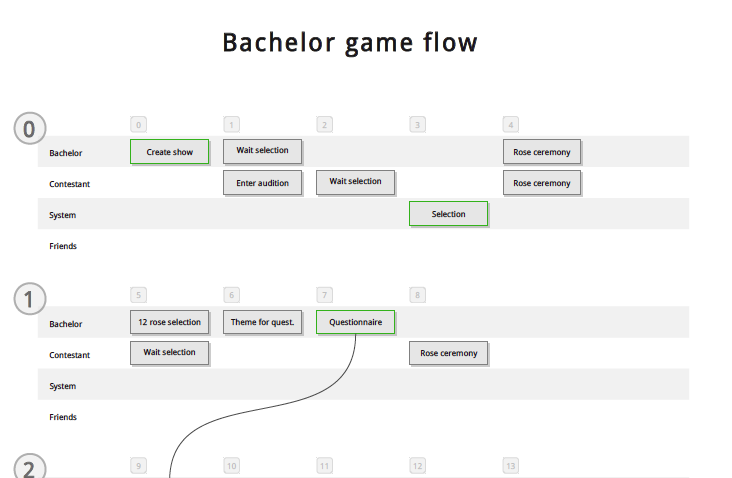

Reality dating game show
Contestants compete to be selected through elimination rounds.
Only 25 participants in the TV show; a Facebook game lets the audience play too!
Facebook lets you take advantage of an existing account, their friends, and social sharing. Great for marketting, no fun for developers.
# What's the purpose of this... there's no id when you ask to add the
# app so it raises the exception before a user can register
# ncadou: the purpose of this check is to prevent the creation of blank
# users when the facebook API actually fails. See commit 7bfef9df70f7.
#if not 'id' in user:
# # TODO log something
# raise Exception('Facebook API error')
if user.get('error', None):
return dict()
Only the most critical ones...
Multiplayer social games are step and role based.
Certain tasks have time limits or system requirements
def make_steps():
g = GameSteps()
# Episode 0 - Audition
g.add(bachelor=g.step('show_create', episode=0))
g.add(bachelor=g.step('audition_wait', has_url=False, episode=0,
can_skip=True),
contestant=g.step('audition_enter', episode=0))
g.add(contestant=g.step('audition_wait', can_skip=True, has_url=False,
episode=0))
g.add(system=g.step('select_contestants', has_url=False, is_stop=True,
timer=Tuneable().get_durations(0),
callback=callback.select_contestants))
g.add(bachelor=g.step('audition_result', label='Reveal Audition Results',
episode=0),
contestant=g.step('audition_result', label='Reveal Audition Results',
episode=0))Handling these is a bit of a pain.
{error: ''}
{error: []}
{error: "some error"}
{some_id: "foo"}
{some_id: ["foo"]}
{some_id: {some_id: "foo"}}Roundabout passing of data.
(Source, target, destination route & extra metadata we supply.)
Handling these is a bit of a pain.
class Notice(db.Document):
id = db.ObjectIdField()
fbid = db.StringField()
origin = db.StringField()
target = db.StringField()
invitation = db.BooleanField()
message = db.StringField()
data = db.DictField()
class ShowNotice(Notice):
relation = db.ReferenceField(Show)
# ...Cont'd.
"User has not agreed to terms of service."
MongoDB as RPC.
MongoDB as RPC.
MongoDB as a low-latency queue.
Insert order.
Updates allowed… mostly.
Long-poll push, like IMAP IDLE.
Stored in a permanant collection.
{
"_id" : ObjectId("4ea3717f9bfbb601d2000002"),
"state" : "new", // pending, dead, cancelled, running, finished
"callable" : "c__builtin__\nprint\np1\n.",
"args" : [ "Task", 0 ],
"kwargs" : { },
"created" : ISODate("2011-10-23T01:44:31.446Z"),
"creator" : [ "Lucifer", 298, 466 ],
"owner" : null, // [ "Lucifer", 324, 456 ]
// If scheduled, not immediate:
"when": ISODate("...")
// If in progress or completed...
"acquired" : ISODate("..."),
// If completed...
"result" : null,
"exception" : null,
"completed" : ISODate("..."),
}Stored in the capped collection.
// Workaround for MongoDB quirk.
{ "_id" : ObjectId("4ea371629bfbb601c8000000"), "nop" : true }
{ // New job.
"_id" : ObjectId("4ea371769bfbb601d2000001"),
"job_id" : ObjectId("4ea371769bfbb601d2000000"),
"creator" : [ "Lucifer", 298, 466 ]
}
{ // Finished job.
"_id" : ObjectId("4ea371769bfbb601c8000001"),
"job_id" : ObjectId("4ea371769bfbb601d2000000"),
"creator" : [ "Lucifer", 324, 456 ],
"result" : true
}Python generators are teh win.
def queue(collection, query=None):
if not collection.find():
# This is to prevent a terrible infinite busy loop while empty.
collection.insert(dict(nop=True))
last = None
query = query or {}
cursor = collection.find(query, slave_ok=True, tailable=True, await_data=True)
while True: # Primary retry loop.
try:
while cursor.alive: # Inner record loop; may time out.
for record in cursor:
last = record['_id']
yield record
except OperationFailure:
pass
retry_query = {"_id": {"$gte": last}}
retry_query.update(query)
cursor = collection.find(retry_query, slave_ok=True, tailable=True, await_data=True)Job locking to prevent accidental execution.
def handler(self, job_id):
# Build the dictionary update.
update = dict(acquired=datetime.utcnow(), state="running",
owner=self.identity)
try:
result = self.jobs.update(dict(_id=job_id, state="pending", owner=None),
{"$set": update}, safe=True)
except:
raise AcquireFailed()
if not result['updatedExisting']: raise AcquireFailed()
try:
job = self.jobs.find(dict(_id=job_id), limit=1,
fields=['callable', 'args', 'kwargs'])[0]
except: # This should, in theory, never happen unless MongoDB goes away.
raise AcquireFailed()
obj = pickle.loads(job['callable'].encode('ascii'))
args = job.get('args', [])
kwargs = job.get('kwargs', {})
return obj(*args, **kwargs)
/
#